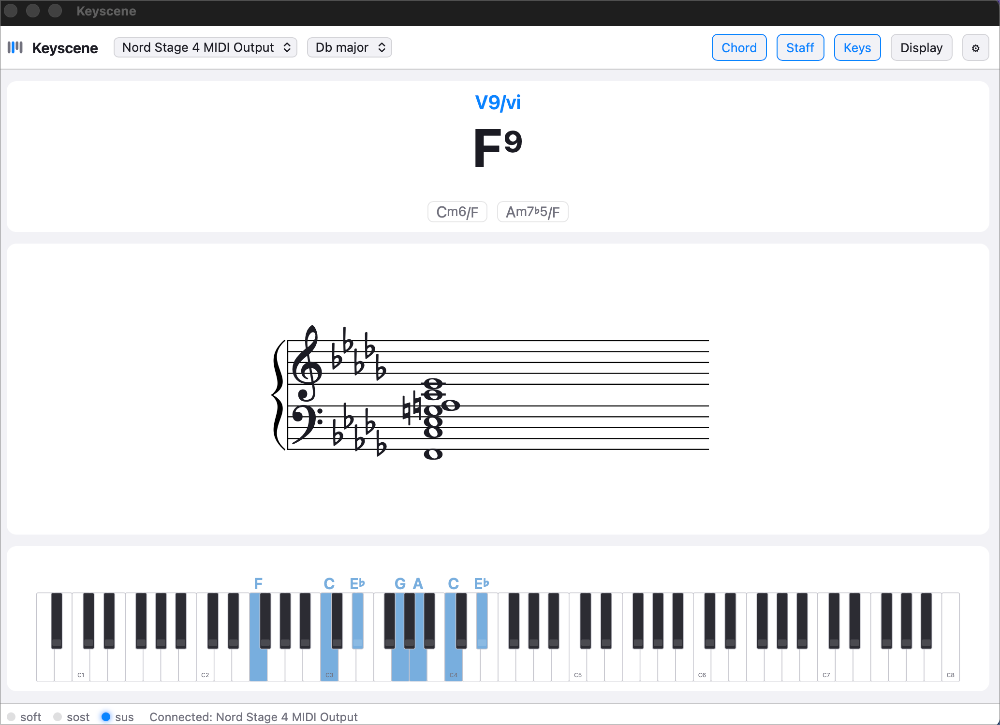

See the chords you're playing.
Keyscene listens to your MIDI keyboard and shows the harmony in real time — the chord name with alternates and Roman numeral, grand-staff notation, and an on-screen keyboard with every sounding note named. Free and open source.

Harmony you can trust on camera
Theory-correct names
G♭maj7sus2, Cm6/F, C7(no3) —
every sounding note accounted for, never a guess that ignores
what you play.
Correct enharmonic spelling
An E major triad in the key of C spells E–G♯–B,
never A♭. The name, the staff, and the key labels
always agree.
Key-aware analysis
Pick a key and get Roman numerals — ii7,
V65/V, ♭VImaj7 — plus diatonic-aware
ranking and key-appropriate spelling.
Grand-staff notation
What you play, engraved live on the staff and mirrored on an 88-key on-screen keyboard with every note named.
No MIDI keyboard? Type to play
The computer keyboard works as an instrument — try chords and voicings before you ever plug anything in.
Free & open source
MIT-licensed, built with Rust and Tauri. Read the source or file an issue on GitHub.
Made for OBS and screen sharing
Press Ctrl/Cmd + D for Display mode: a chrome-free window with just the elements, ready to drop into a stream, lesson recording, or video call.
- Movable, scalable elements — drag to position, scroll to resize, sharp at any size.
- Transparent or chroma-key background — green, magenta, or blue, ready to key out in OBS.
- Click-through & always-on-top — keep it above your DAW while clicks pass through to the apps underneath.
- Layout presets — save your arrangement and recall it per scene.
Two-minute setup
1. Plug in your MIDI keyboard and open Keyscene — it connects automatically.
2. Play. The chord card, staff, and keyboard track every note.
3. Press Ctrl/Cmd+D,
pick a background, and add a Window Capture of “Keyscene
Display” in OBS.
4. Optionally pick a key in the toolbar for Roman numerals.
Install notes
macOS
Open the .dmg and drag Keyscene to Applications. Builds are signed and notarized by Apple — no security warnings. Apple Silicon (M-series) Macs.
Windows
Run the .msi installer (a setup.exe is also available on the releases page). Windows builds are not yet code-signed, so SmartScreen may warn on first launch — choose More info → Run anyway.